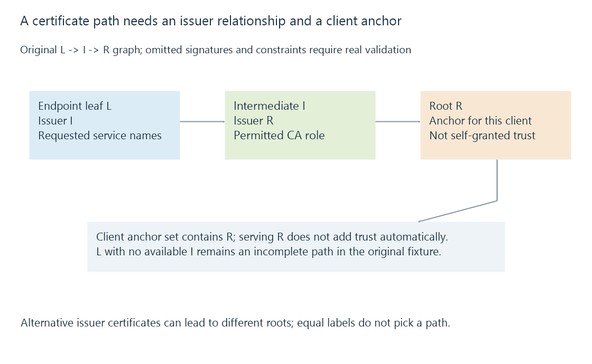

Certificate trust chains and path validation
A certificate trust chain links endpoint evidence through valid issuer relationships to a client-trusted anchor, with path validation separate from service-name matching.
A server normally presents its endpoint certificate and the relevant intermediate certificates. The client tries to build an acceptable path from that leaf evidence to an anchor it already trusts.
A list of certificates sent by the server is therefore input to validation. It is not automatically a trusted chain.
Begin with the client’s anchor
Use an original path:
Server leaf L -> Intermediate I -> Root R
Client trust anchors: R
Each arrow in this graph represents an issuer relationship whose signature and constraints must be checked. L is the endpoint certificate; I is permitted to issue the relevant child certificate; R is the declared anchor for this client.

Trust starts with the client’s chosen anchor policy. A self-signed root received over the same untrusted connection cannot grant itself trusted status merely by validating its own signature.
Otherwise, an arbitrary endpoint could create a root and declare its own evidence acceptable.
The path needs the intermediate relationships
Consider this original reduced input:
{
"leaf": {"id": "L", "issuer": "I"},
"availableIssuers": [{"id": "R", "issuer": "R"}],
"trustedAnchors": ["R"],
"pathComplete": false
}
The client trusts R, but it cannot directly bridge L’s issuer I to that root with the supplied data.
Sending R again does not replace the missing I. The client needs an appropriate intermediate from its available sources.
Some implementations can use cached or retrieved intermediates. Another TV/app may have no such source available. A browser succeeding with a previously cached I therefore does not prove the server supplied a complete usable chain to every client.
Signature relationships are necessary but not sufficient
A certificate claiming issuer I needs a valid issuer-signature relationship to the relevant key. Matching the issuer’s display text alone does not verify that relationship.
Path processing also checks constraints and usage appropriate to the chain. Intermediate basic constraints, certificate-signing key usage, permitted path length and name constraints can affect whether a path is acceptable.
A certificate chain can therefore have apparently connected issuer names while still failing validation.
This page’s readable objects omit signatures and detailed constraint processing. They explain the graph and prerequisites, rather than implementing RFC 5280’s complete validation algorithm.
An intermediate constraint applies to its descendants
Consider a separate original constraint exercise. Intermediate I1 is a CA, can sign certificates and has a path-length limit of zero. It issues either the endpoint leaf L directly or another non-self-issued intermediate I2, which then issues L.
| Descendants beneath I1 | Subordinate CA count | Fits the declared zero limit? |
|---|---|---|
| Endpoint leaf L | 0 | Yes |
| Intermediate I2, then L | 1 | No |
The endpoint leaf is not another CA certificate in that count. A valid signature by I1 therefore does not automatically permit an extra issuer level.
Name constraints add another kind of permitted scope. An issuer can restrict the relevant names in descendant certificates even while the cryptographic issuer relationships are connected. Both the path and permitted naming need the complete prescribed processing.
These reduced cases explain what a constraint can exclude. Self-issued exceptions, policy processing and the complete validation state remain in RFC 5280 rather than being implemented by this table.
Time and service identity add independent checks
Relevant certificate validity intervals must be appropriate at the validation time. Revocation/status handling and algorithm policy also belong to the client’s validation context.
The final server identity must match the requested service. A path to a trusted root with a certificate for another hostname does not establish the identity of media.example.net.
An original decision table makes the independence explicit:
| Declared path result | Declared requested-name result | Suitable endpoint identity in this simplified model |
|---|---|---|
| Valid | Match | Passes these two prerequisites |
| Valid | Mismatch | Fails the service identity |
| Incomplete | Match | Fails the path prerequisite |
The first row still leaves other required checks to their real validation process.
The same issuer key can have alternative certificate paths
A cross-signed issuer can have certificate representations leading toward different roots. Equal issuer labels alone do not identify which representation the client received or selected.
Use this original key/issuer graph, with all omitted signature relationships assumed valid for the exercise:
{
"leaf": {
"id": "L",
"issuerKey": "KI"
},
"issuerCandidates": [
{
"id": "I-old",
"publicKey": "KI",
"issuer": "R-old"
},
{
"id": "I-new",
"publicKey": "KI",
"issuer": "R-new"
}
],
"trustedAnchors": [
"R-old"
],
"selectedPath": [
"L",
"I-old",
"R-old"
]
}
The leaf’s signature can be checked with the same modeled issuer key KI in either branch. The available certificates then lead toward different root anchors.
A client trusting only R-old has a candidate through I-old; receiving only I-new does not supply that old-root path unless the client can obtain the other applicable certificate separately.
Another client may trust R-new and prefer the other branch. A server transmitting one chain and a client constructing its usable path therefore have related but distinct choices.
The graph’s key labels do not verify actual signatures. They make the reason for alternative paths visible without claiming that a root name or fingerprint by itself establishes trust.
Different clients can start from different anchor sets
Operating systems, embedded devices and app-specific TLS libraries can carry different trust stores and update lifecycles.
A path ending at R can be acceptable to a client trusting R and unavailable to another whose anchor set lacks it. An alternative served/cached chain can also lead to another supported anchor.
The useful comparison is the actual served leaf/intermediates, the path built by the failing client and its relevant validation result. “The root is trusted on my laptop” identifies that laptop’s context.
Deployment includes the chain actually served
A renewed leaf file can be installed alongside an old or missing intermediate set. A public proxy and direct Emby listener can serve different certificate chains.
See Also
- TLS certificates, public keys and endpoint evidence
- Certificate hostnames and the requested service identity
- Certificate renewal, ACME and deployed results